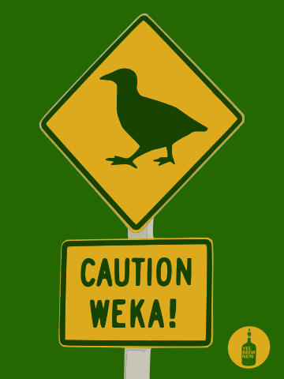
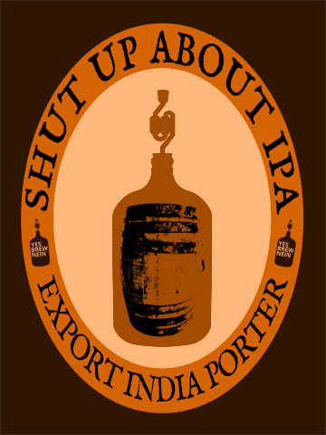
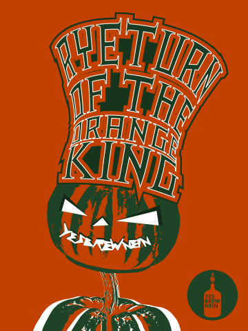
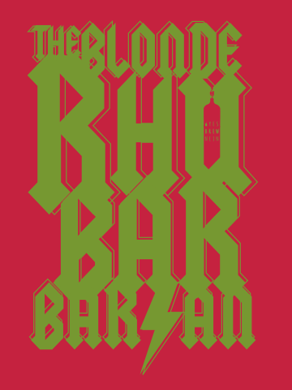
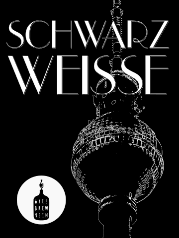

Welcome
Hi, my name is Max and I'm a homebrewer from Potsdam, Germany. This site is a log of my homebrewing efforts that began in late 2014. I started out brewing all kinds of different beer styles to get some experience with different malts, hops, and yeasts. This resulted in some quite interesting beers with weird ingredients like beet root. Now I usually tend to brew beer styles that I like but can't buy locally, or beer styles that really pose a challenge like barley wines or very low ABV beers. At the moment, my favorite beer styles are Saisons, (Black) IPAs, and traditional English Porters. Below you find a list of all the brews that I made so far; each with a description of the ingredients I used and some tasting notes. To better characterize my beers, I try to give them a meaningful name and design a label which reflects the color, style, and/or ingredients of the beer. You find the recipes of all my beers at brewgr.com. If you like to contact me, send a mail to yesbrewnein or find me on facebook.
The Brews
-

Caution Weka!#14
As the name and label suggest, this beer is about New Zealand, specifically about Motueka hops. I used it as the only hop for my third Saison that I brewed in August 2017. The malt bill consisted of Pilsner, Golden Promise, wheat, and Munich malt, as well as some flaked spelt to create a hazy golden color with a semi-dry body and a creamy mouthfeel. As the go-to yeast for my Saisons I used Mangrove Jack's M29 French Saison. The hop schedule was mostly whirpool and dry-hopping. Only a few grams at the beginning of the boil to get to 25 IBUs and prevent boil-overs. My mash efficiency was 10% better than usual and I ended up with an OG of 1.055 instead of the planned 1.048. I fermented the beer at 30°C which was the upper end of the recommended temperature range and caused quite a vigorous fermentation that ended in an FG of 1.006 after 10 days with approx. 6.5 ABV. After that I dry-hopped with 5 g/l for 4 days before priming and bottling for 2.6 vol. of carbonation. The finished beer is hazy golden with a white head. It has a bright lime and fruity aroma with hints of gooseberry and other southern hemisphere hop aromas accompanied by peppery spiciness. The yeast produced a great mouthfeel that combines refreshing dryness with a lingering carbonation and creaminess from the wheat and spelt. Although dry, it has more of a medium body that never feels watery. Fruits, spiciness, and some grainy maltiness in the background characterize the taste that finishes in a pleasantly smooth bitterness. Motueka is a great single hop for Saisons. It perfectly blends with the fruitiness and spiciness of the yeast while still providing its unique aromas that got even more pronounced and tropical with time. For other styles like IPAs, I would probably combine it with dank and earthy hops like Galaxy, Simcoe, or Mosaic to balance their pungency.
-
The Juicy Void#13
Making a good non-alcoholic beer is probably more difficult than brewing a barley wine. Alcohol is one of the key factors for the perception of beer. It affects mouthfeel, sweetness, and body. The easiest and most common way of making beer without alcohol is a stalled fermentation where the temperature is kept near zero degrees to prevent the yeast from doing its job. The result is mostly a cloyingly sweet, cereal-like tasting beer that is close to unfermented wort with hops. Urgh. The better way is to make a normal beer and remove the alcohol afterwards. On a commercial level this is mostly done using evaporation of alcohol under vacuum conditions where the boiling point of water is close to 40°C. Doing this as a homebrewer is not really feasible so I had to think of something to preserve the taste when doing a double boil. I decided to use absolutely no hops during the initial boil and to use it only in the second one during whirpool and for dry-hopping. The base beer was a session version of a New England IPA with British Pale Ale malts and flaked oats and spelt for a creamy mouthfeel. I avoided light and medium crystal malts and used only some CaraPils to compensate the lack of body. For hopping I used only Equinox, first in the whirpool to get a medium bitterness of 40 IBU, and the rest went into dry-hopping (6g/l) to get some pungeant aroma of tropical fruits. I fermented with Danstar London ESB which worked really well in brew #12. This yeast does not ferment maltotriose so I mashed a bit lower to avoid a lot of residual sweetness. The wort went from 1.040 to 1.010 to produce roughly 4% ABV. I had hoped for a higher FG but I somehow misunderstood the CaraPils malt. The American version is a very low color crystal malt with lots of unfermentable dextrins. The German version which I used is a mealy, protein rich malt that helps with producing a lasting foam in Pilsners. For the second boil, I topped up with water and boiled for an hour to evaporate the alcohol. I then switched off the flame and waited ten minutes before adding the whirpool hops for half an hour. Directly after the beer was cooled down to 20°C I added the hops for dry-hopping and left it sitting for 3 days. For bottling I totally miscalculated the amount of priming sugar because I didn't account for the CO2 that was removed from the beer during the second boil. I decided to re-prime all the bottles with a slight risk of overcarbonating them. The finished beer had between 0.5 and 1% ABV due to the refermentation in the bottle. It had a hazy yellow appearance and an aroma of lime, honey melon, and something that resembles green bell peppers, but in a fruity way. Not bad but also not really juicy and tropical. Columbus and Citra or Mosaic would have worked better probably. The carbonation was a bit high due to the re-priming and could be easily swirled out. The body was pretty light, but the mouthfeel was still good and not watery thanks to the flaked grains. Brewing a tasty non-alcoholic beer at home definitely works, but there was still lots of room for improvement flavor-wise which is mostly recipe related. Mashing high and using a versatile yeast like US-05 would have been better, probably. Also a light crystal or Munich malt would have added more flavor and body than CaraPils, I think.
-

Shut up about IPA#12
The first time I came across the Shut up about Barclay Perkins blog I knew I wanted to make a historical British beer. Besides IPA, Porter was one of the traditional British beer styles that has almost been forgotten although it was one of the most popular beer styles in the 18th and 19th century. And there was also an export version of Porter which had similar hopping rates to IPAs. As I like black IPAs a lot, I decided to make an Export India Porter and give it a name that honours its source and historical context. The malt bill consisted mostly of Maris Otter pale malt. However, one of the key ingredients in a 19th century Porter is brown malt, a highly kilned malt that imparts lots of mocha, dark chocolate, and roastiness while still providing some biscuity malt taste. Luckily, brown malt can be made at home from pale malt. So I gave it a try and put some of the Maris Otter malt in the oven. On the way to making brown malt, I additionally made some amber malt which was also often used in historical Porters. It provides more of a toasty biscuit flavour. I also added a bit of black malt to get a dark brown color and even more roastiness. Hopping was done solely with East Kent Goldings as a first wort and whirlpool addition for around 60 IBUs. For fermentation I used Lallemand's London ESB yeast, which I initially thought was a dry version of Fuller's ESB yeast. It is a nice British yeast with some reduced ester production that got the beer from an OG of 1.061 to 1.017 within 24 hours. After that, it almost stopped and ended up at 1.014 after a week. The yeast hardly flocculates which is quite unusual for a British yeast, but it maybe helps with avoiding diacetyl. After the fermentation was finished, I dry-hopped with 6g/l to get that wonderfully earthy/ fruity aroma from the EKGs. The finished beer is very interesting and quite unusual. On the one hand, there is a profound hop aroma and bitterness which is however different from American Porters due to the British hops. And on the other hand, there is quite some body with lots of dark chocolate and bit of espresso and a malty base in the background. It's so good not to have any caramel, toffee, raisins, or burnt sugar from crystal malt in a Porter.
-

Ryeturn of the Orange King#11
After my beet root dominated autumn beer in 2015, I wanted to make something that is more pumpkin. I completely passed on adding spices and used the Mangrove Jack's M29 French Saison yeast instead to make a pumpkin saison. The malt bill consisted of Pilsner, Golden Promise, Munich, and 20% rye malt. And since it should be a pumpkin beer, I also added a lot of butternut squash (30%) to the mash. I expected some gravity bump from the pumpkin, but butternut contains hardly any sugar, so I ended up with an OG of 1.053. I used Columbus hops in the boil as a 20-minute addition which added roughly 30 IBU. The beer fermented at 25°C and ended up at 1.005 FG corresponding to 6.3% ABV which is a pretty good value for a Saison. The finished beer is nicely dry and has some cloves and pepper spiciness accompanied by a bit of peach aroma from the yeast. The malt and hop balance worked out quite well with the rye providing a nice edge. There is also a nice, subdued citrussy hoppiness from Columbus which is a very underestimated hops in my opinion. Unfortunately, the pumpkin is hardly noticeable. Probably because butternut is not very dominant in taste and more of a pie pumpkin. Hokkaido would have added more pumpkin flavor and aroma, maybe. Nonetheless I'm really happy with the overall result.
-
La Saison du Smash#10
My first try at a Belgian Saison was originally planned as an English session IPA with only English Mild Ale malt and East Kent Golding hops. However, since the temperatures were much too high in June to ferment with an English ale yeast, I switched to Mangrove Jack's M29 French Saison yeast to make it a single-malt-and-single-hop Saison. The original gravity was 1.037 which would have probably ended up at roughly 3.5% ABV with an English yeast. However, this Saison yeast was a monster attenuater that left the beer at 1.003 final gravity which corresponds to 4.6% ABV. I started fermenting at 20°C and let the temperature climb to 25°C over a couple of days. After that I let the temperature rise freely. The beer was fully attenuated after 10 days. The finished beer was nicely dry with phenolic aromas of cloves and pepper accompanied by a hint of peaches. This was well supported by the earthiness of the hops which has also been used for dry-hopping. However, this was hardly noticable. For me, Saisons are now the go-to beers to brew during the summer months as they can tolerate higher temperatures and deliver a very drinkable and refreshing summer beer.
-

The Blonde Rhubarbarian#9.5
Since 2015, there is the Berlin Beer Week, an annual week in Berlin dedicated to craft beer events. Part of this week is a homebrewing competition based on the wort of the week's official beer brewed by the BrewBaker brewery in Berlin-Moabit. Each interested homebrewer could create his or her own turn on the base beer to be served at the closing event of the week. The beers were then to be judged by the audience with the winner getting the chance to brew the beer in a larger volume. In 2016, the base beer was an amplified 1.048 OG Berliner Weisse wort, Citra mash-hopped and refined with some honey and lemon zest during the boil. My idea was to create a lightly sour beer that was not based on lactobacillus souring. Unfortunately, the wort got an infection from the brewery and started fermenting while I was waiting for some cooler weather to start the fermentation. I decided to re-boil the wort and topped off with water to keep the volume. I also added some East Kent Golding hops in the last minutes to get some more aroma. For the fermentation, I used WLP002 English ale yeast for the first couple of days to get a nice fruityness and afterwards, I used US-05 to bring the gravity down. The sourness was created by racking the 10 liters of finished beer on to 1.5 kg of freshly cut and frozen rhubarb, and letting it sit for two weeks. Due to the re-boil, the already present alcohol was evaporated and the finished beer ended up at 3.5% ABV. It was nicely dry and fruity with quite some rhubarb aroma having a slight sourness supported by a pretty good carbonation.
-
Campfire Smoke#9
For my first real wheat beer I decided to make a sessionable American wheat ale that was "Grätzed" up by some oak-smoked wheat malt typical of the classic Polish Grätzer or Grodziskie style of beer. The malt bill consisted of 20% Pilsener, 20% Pale Ale, 10% Munich, and 50% wheat malt of which 20% were oak-smoked. For the hops I used German Magnum for a clean bitterness and the often used Amarillo®-Simcoe® combination as a whirlpool addition for some nice fruity-piney aroma. I used US-05 yeast to get a clean fermentation character. The finished beer had an OG of 1.010 with 4% ABV and was exactly what I wanted for a summer wheat ale. I aimed for 25 IBU but this was exceeded a bit by the whirlpool addition due to the relatively high alpha acid content of Amarillo® and Simcoe®. The oak-smoked wheat malt added an interesting twist which provided the beer with some unconventional spicyness as a nice counterpart to the fruityness of the hops. The high percentage of wheat provided a nice creamy mouthfeel and some breadyness.
-

Schwarz Weisse#8
Almost extinct a couple of years ago, Berliner Weisse is now a favorite of American craft breweries when it comes to sour beers. Usually brewed with two thirds of Pilsener malt and one third wheat malt, I decided to replace a portion of the Pilsener with Carafa II special to make a black Berliner Weisse or "Berliner Schwarze". The tart sourness in Berliner Weisse is mainly provided by Lactobacillus and can be twisted by some Brettanomyces funk. Out of convenience and curiosity, I decided to do sour mashing what I regretted later. I did a normal single-infusion mash and after it was finished, I added some uncrushed Pilsener malt, covered it with plastic wrap, and let it sit for two days. When I started lautering, the mash had a strongly sour but not necessiraly unpleasant odor. I added the Carafa II special during recirculation, collected some nicely black wort, and started boiling for 90 minutes to get rid of potentially harmful bacteria. Boiling the sour wort was quite disgusting as it had a strange sour coffee aroma that was present in the kitchen for two weeks. At the end of the boil I added some German Cascade and Huell Melon hops for some fruity aroma. I fermented the wort with US-05 and added the bottle dregs of Siren's "All Bretts are off" when the primary fermentation was finished to give the Brett a chance to do it's magic. I left the beer with the Brett for three months and then bottled it. After additional four weeks I had a first try and it was pretty disgusting due to the lovely smell and taste of vomit which is an indication of butyric acid that was probably created by Clostridium bacteria. Luckily, not all is lost as some Brett strains are able to convert butyric acid into something that tastes like pineapple, given enough time. I decided not to dump it and to give it at least six months before trying another bottle. If I brew another sour beer, I will definitely not use sour mashing again as the risk of bacterial infection other than lactobacillus is just too high. Instead, I will make a lactobacillus starter either from a pure culture or by adding some uncrushed malt to starter wort in a more controlled environment. This will than be used in a mixed culture fermentation with Saccharomyces and optionally Brettanomyces.
-

ESBrewnein Sounds Better#7
My first brew in 2016 was an Extra Strong Bitter with a traditional English ale yeast (WLP002). I wanted to have a nice malty ale, so I chose Maris Otter as the base malt for lots of biscuity flavor supported by some medium crystal, a bit of very dark crystal, and a tiny bit of black malt. For hopping I used only East Kent Goldings to get a typical English bittering character. To get as much hop flavor as possible without being too bitter, I used a combination of first wort hopping and whirlpooling with a target of 40 IBU. The fermentation was quite vigorous for the first couple of days and brought the OG of 1.059 to an FG of 1.012 after two weeks in the primary, which ended up in 6% ABV and was exactly what I wanted. However, bottling with the ESB yeast can be a nightmare. In some cases, the yeast woke up during bottling and started fermenting again which led to some overcarbonated bottles. This is probably due to the super high flocculation characteristics of this yeast. For the next beer with the ESB yeast, I have to rouse it regularly and maybe even use a second, less flocculating yeast in the secondary fermentation to clean up properly before bottling. The beer has a great malty and also quite fruity flavor with some earthiness and a little bit of honey from the hops. The bitterness is very smooth and feels more like 30 than 40 IBU. The first wort hopping really worked for me in this beer.
-

New World, Olde Ale#6
Although the name maybe suggests an Old Ale, brew #6 is an American barleywine hopped only with Simcoe® hops. I wanted to see if I can manage to brew a barleywine with my system and my brewing techniques. Since I read that the mash efficiency is relatively low for big beers, I used 9.5 kilograms of malt for 15 liters with a target of roughly 10% ABV and 100 IBU. The malt bill consisted of 94% pale ale malt, 3% CaraAmber, and 3% CaraMunich II. For fermentation I used most of the WLP001 yeast cake from brew #5. The beer went from 1.105 to 1.020 which leads to roughly 11% ABV. Hence, mission accomplished.
After the primary fermentation was over, the beer went into secondary for one month of conditioning. I had a first try after additional 3 months of bottle conditioning. At first it was pretty overwhelming because 11% ABV in a beer is a lot. Due to the high attenuation the beer is not really sweet and that is good. So far, it has a very nice malty taste with the hops struggling a bit to hold up against the alcohol. I will let it mellow out for another 3 or 6 months and try it again. -

Beet it, Bloody Pumpkin #5
Pumpkin meets beet root for the ultimate autumn ale vegetable clash, featuring pumpkin pie spices like cinnamon, nutmeg, clove, ginger, and cardamom. To support the earthy flavor of beet root, I used German Magnum and Northern Brewer hops for bittering and flavor with a target of 45 IBU. For aroma, I used freshly picked wild hops from the Uckermark (the place where I grew up) as a whirlpool addition. The malt base consists of pale ale and vienna malt, and some light and medium crystal malt for body and color. I also added a bit of Carafa Special II malt to get a deep reddish color, but instead it got brown. However, when I poured the fermented beer on to the beet root in the secondary, it got bloody dark red. The beer finished at around 5% ABV.
The first thing to notice about the beer is a really nice pink head. The scent of the beer contains lots of cinnamon, ginger, and clove mixed with earthiness of beet root. The beginning is slightly sweet which turns into a spice dominated finish. Hop bitterness is present but has only a supportive role.
I wouldn't call this a drinkable everyday beer, but as an autumn/ winter seasonal it works for me. I should probably do a split badge w/o beet root if I brew it again, and leave the Carafa malt out. -

Melon Catcher in the Dark #4
A Cascadian Dark Ale made with rye for a slight spicyness and Hull Melon for a melon-like hop aroma. That was the premise for brew #4. For the malt base I used 85% pale ale malt and 8% rye malt accompanied by 3% of CaraMunich II and 4% dehusked Carafa II malt for a rich body and a nice dark color without being overly roasty. I hopped with German Magnum, Cascade, and Hull Melon for a citrussy and honeydew melon aroma with a target of 65 IBU. For fermentation I used WLP001.
I aimed for an OG of 1.070 but unfortunately the malt was not properly crushed, so I ended up with 1.050 OG. The final beer had 1.012 which leads to around Alc. 4.9% Vol. Hence, it was more a session version of a Cascadian Dark Ale. The beer has a nice dark, almost opaque color with ruby accents. The body is quite balanced with a nice mouthfeel and a fruity aroma with hints of roastiness. Unfortunately there is no melon aroma at all. It's more a mixture of citrus and strawberry which the Hull Melon is also known for. The finish is heavily hoppy but not overwhelming. -

C'mon, Cali #3
Brew #1 was all extract. Brew #2 was extract with grains. So, brew #3 had to be all-grain to follow the scheme. After brewing two ales, I also wanted to make a lager. California Common was the obvious choice as I can ferment it at nearly room temperature. Following this simple beer style, I used 90% pale ale malt and 10% medium caramel malt. The hopping was done using only German Northern Brewer with a target of 35 IBU. For fermentation I made a starter from a pack of Wyeast 2112.
Brew #3 turned out to be a reddish copper colored, malty, and moderately hopped lager with a slightly fruity aroma. Building up carbonation took a lot of time, but after around two months, the mouthfeel was great. -

Umbus Rillo Num #2
As an IPA seemed too intimidating for my second try, I went for an American Pale Ale with a triple hop combination of Columbus, Amarillo®, and Ahtanum™ with a target of 60 IBU. For the malt base I used extra light dry malt extract and light liquid malt extract. To enhance the taste and to advance my brewing process, I used Maris Otter pale ale as a steeping addition. For fermentation I used Mangrove Jack's London Ale dry yeast.
The beer turned out deep golden with a citrussy and floral aroma. The malt character was more subtle than for brew #1, creating a slighter body. The carbonation was a bit strong without being a Hefeweizen or Belgian Wit. The finish was hoppy and bitter but not as long lasting as for brew #1. -

Hop Two Four Three #1
This was my first ever homebrew. Planned as a hoppy american amber ale, it turned out more ruby than amber. It was brewed with light and amber liquid malt extract and four different hops: Polaris, Nugget, Willamette, and Saphir; targeting 70 IBU which was a bit too much. I additionally dry-hopped it with Polaris and Willamette. Starting out with dry yeast, I used Nottingham ale yeast for a fruity fermentation.
The taste turned out to be quite malty with a fruity hop character at the beginning and a long lasting bitter finish. There was no minty hop character from Polaris at all, but this could have been caused by using too many hop varieties.
Why I began homebrewing
When I visited New York in 2014, I learned that beer can be more than Pilsener,
Export, and Hefeweizen. After I tried american pale ales and vienna lagers loaded with American hops, I was
instantly hooked by the rich taste in comparison to boring, bland tasting German macro beer.
Back in Germany, I did a bit of investigation and discovered a whole world of beer styles like brown ales,
porters, IPAs, imperial stouts, or barleywines. And the best thing is that you can actually
make these at home, and there are tons of information available about homebrewing.
Although there are German books about brewing, I started reading How to Brew
because Germans tend to overcomplicate things especially when explaining something technical like brewing that has
such a long tradition in Germany. Since I don't like prebuilt things
that I can't modify, I didn't go for the usual pre-hopped beer kit. Instead, I bought some malt
extracts and hops and tried to make a beer which is a bit more of my own.
After I made my first two badges based on malt extract, I wanted to do something more interesting
and so I went for all-grain. Since a Braumeister was too expensive, I build a mash-lauter-tun from
a camping cooler with a copper manifold. For making a yeast starter, I build a stir-plate
from a wooden box, a PC-case fan, and a magnet from an old hard drive. There is a lot to learn
from American homebrewers when it comes to equipment. At first, my brewing efficiency was about
60%. After adjusting the mash ph and using batch sparging with equal runnings, it is now at 70%.